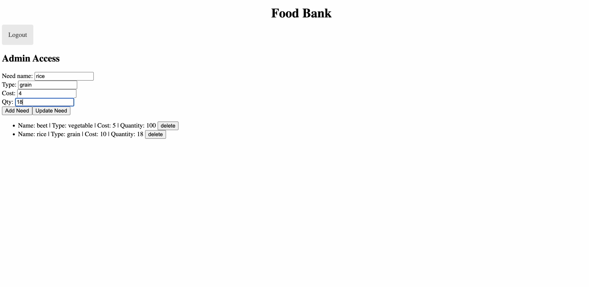

This was a project done in a team of four. This is a full stack application that models a food pantry with users and an admin. The following images and details will show how our application has developed over sprints.
Skills used:
Apps used:
Java, Angular, HTML, CSS, Agile Methodologies, Code Coverage, Code review, Unit Testing
Visual Studio Code
We first had to make a plan for the project. We designed a Domain Analysis Diagram to set up the logic behind our application. When that was completed, we started working on the backend of our project. We wrote the functions for an admin to be able to add, delete, or update food items in the inventory. We then tested these functions using curl commands.

In this sprint, we started working on the user interface and continued creating functionality. We first made a basic login page that sends the user into the admin page or their own user page. Then, we made an admin page with add, delete, and update buttons to change the inventory.

Next, we created a user page where the food items are displayed. We then created buttons for the user to add or delete food items from their basket. We also created a search bar to enable the user to search for food items by name.

In this sprint, we finished up our project. We finished implementing our final functionalities and improved our user interface. We added vibrant colors and changed button sizing.

In our admin page, we improved the user interface and kept the functionalities the same.

In our user page, we added a checkout button which lets the user check out their items, removing them from the basket and inventory. We also implemented a donation bank and a total contribution ranking system, displaying the top three contributors on every user page.